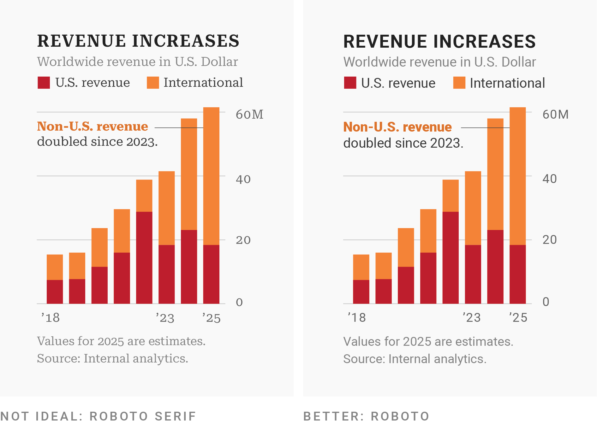
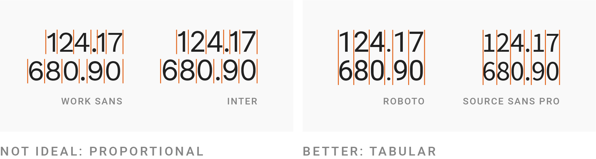
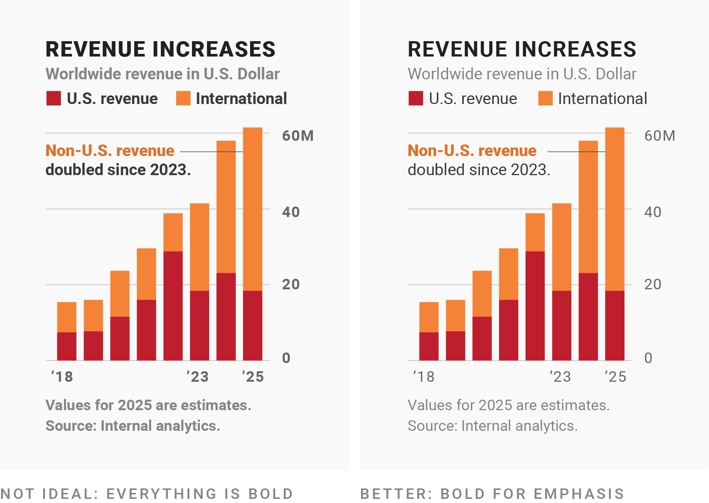

Economic Policy Visualization
Labour · Labels
Full employment as economic policy goal
- UN SDG 8.5: “By 2030, achieve full and productive employment and decent work for all women and men, including for young people and persons with disabilities, and equal pay for work of equal value.”
- Full employment is desirable since the individual, economic, and social costs of unemployment are high (Young, 2012): risk of poverty, health issues, decreasing human and social capital, stigmatization, rising government expenditure, etc.
- However, full employment affects the industrial relations between capital and labour and might thus not be favoured by capital owners (Kalecki, 1943)
Opposing views on the labour market
Neoclassical view
- Labour market is one among many other markets
- Price (i.e. real wage) brings labour supply and labour demand into equilibrium
- Full employment is achieved in the labour market equilibrium, while unemployment is voluntary due to specific labour-leisure choices
- Involuntary unemployment is a result of third-party intervention into the labour market
(Post-)Keynesian view
- Labour market is posterior (downstream) to production
- Demand for labour is determined by effective demand on the goods market
- Full employment is reached when effective demand equals full capacity utilization
- Involuntary unemployment is a consequence of lacking aggregate demand by private and public sector.
Goods and labour market in the Keynesian cross
A classification of unemployment
| Macroeconomy | Specific sectors | |
|---|---|---|
| Short-term | frictional: people voluntarily leaving their job need some time to find new employment. Unemployment is thus interim and even present in an economy with full employment. |
seasonal: Seasonal jobs are limited to a certain time period, leaving people in those industries without employment after the season ends (e.g. tourism, construction). |
| Mid- and long-term | cyclical: the number of unemployed workers varies during cycles of economic ups and downs. Business cycles on average last 5-6 years and typically affect the whole economy. |
structural: caused by fundamental change in the economy such as evolving technology. While jobs are available, people who could fill those roles either don’t have the right skills or aren’t in the right location. |
Policies against unemployment
- Active labour market policy (ALMP)
- Aim: integration of the unemployed into the labour market (Card et al., 2017)
- Examples: coaching, training, subsidies for secondary labour market, assistance for personal issues (homelessness, addiction)
- Passive labour market policy (PLMP)
- Aim: social security for the unemployed
- Examples: unemployment benefits, income support, etc.
- Activating policies
- Aim: ALMP paid from funds for PLMP
- Examples: part-time work for the elderly, training allowances
- Job guarantee
- Aim: Public sector as amployer of the last resort
- Examples: India (Ravi/Engler, 2015), Marienthal in Austria (Kasy/Lehner, 2022)
The measurement of unemployment
- International definition (ILO/Eurostat)
- Data: Labour Force Survey (LFS) - 23,000 household per quarter in üá¶üáπ
- Unemployed: if not worked at least 1 hour in the reference week
- Rate: \[\frac{\texttt{unemployed (15-74 years old)}}{\texttt{labour force (employed + unemployed, 15-74 years old)}}\]
- National definition
- Data: Public Employment Service (AMS)
- Unemployed: officially registered at AMS
- Rate: \[\frac{\texttt{registered unemployed}}{\texttt{labour force (employed + unemployed)}}\]
Unemployment rates across Europe
The 'cran_repo' argument in shelf() was not set, so it will use
cran_repo = 'https://cran.r-project.org' by default.
To avoid this message, set the 'cran_repo' argument to a CRAN
mirror URL (see https://cran.r-project.org/mirrors.html) or set
'quiet = TRUE'.Evolution of work time
Warning: Tried to calculate with group_by(), but the calculation failed.
Falling back to ungrouped filter operation...label_key: geoLabour market participation of parents in Austria
Labels and Fonts
Serif and sans-serif fonts
Source: Datawrapper
Sans-serif fonts are better for reading charts

Source: Datawrapper
Use a font with lining and tabular numbers


Source: Datawrapper
Use bold fonts only for emphasis

Source: Datawrapper
But don’t use too thin font, either
Source: Datawrapper
Choose an adequate size for your annotations
Source: Datawrapper
Use uppercase fonts wisely
Source: Datawrapper
There are condensed and wide fonts

Source: Datawrapper
Don’t be too narrow, but too wide neither
Source: Datawrapper
Some examples


Source: Datawrapper
Bibliography
References
Card, David/Kluve, Jochen/Weber, Andrea (2017). What works? A meta analysis of recent active labor market program evaluations. Journal of the European Economic Association, 16(3), 894–931. DOI: 10.1093/jeea/jvx028
Kalecki, Michal (1943). Political aspects of full employment. The Political Quarterly, 14(4), 322–330. DOI: 10.1111/j.1467-923x.1943.tb01016.x
Kasy, Maximilian/Lehner, Lukas (2022). Employing the unemployed of marienthal: Evaluation of a guaranteed job program (Working Paper No. 2022-29). INET Oxford.
Ravi, Shamika/Engler, Monika (2015). Workfare as an effective way to fight poverty: The case of india’s NREGS. World Development, 67, 57–71. DOI: 10.1016/j.worlddev.2014.09.029
Young, Cristobal (2012). Losing a job: The nonpecuniary cost of unemployment in the united states. Social Forces, 91(2), 609–634. DOI: 10.1093/sf/sos071